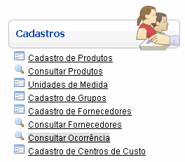
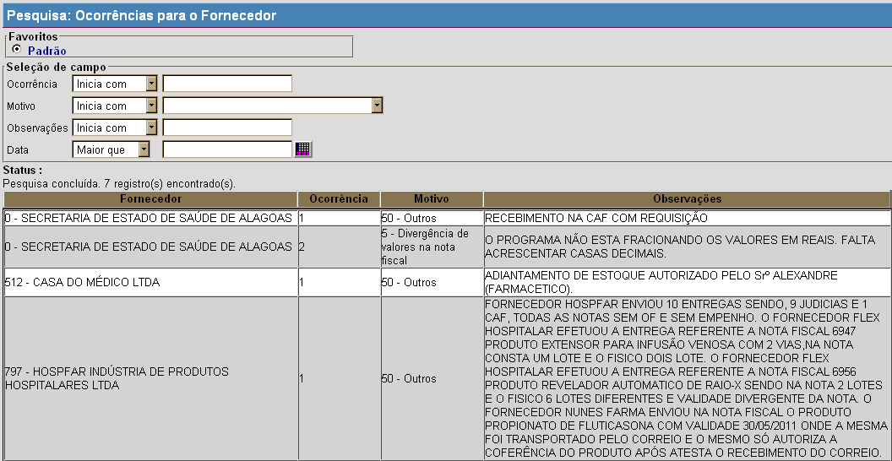

Consultar Ocorrências [ Voltar ]
Utilize este formulário localizar e abrir registros de ocorrências cadastradas.
O formulário "Consultar Ocorrências" encontra-se dentro do menu "Cadastros".

Ao clicar no formulário, o sistema exibirá a seguinte
tela:

1º Passo: utilize os filtros da pesquisa
para localizar a ocorrência desejada. Os filtros de pesquisa para esta tela são: - Ocorrência. Digite aqui as iniciais do número da ocorrência para que o sistema retorne os resultados correspondentes.
- Motivo. Selecione aqui um dos motivos de ocorrência para que o sistema retorne todos as ocorrências associadas ao motivo em questão.
- Observações.
Digite aqui uma palavra-chave das observações para que os resultados
exibam todos registros que contêm observações com o conteúdo digitado.
- Data. Você pode inserir aqui uma data de referência para esta pesquisa. Observe que ao lado do campo "Data", o indicador do campo é Maior que. Desta forme, informe neste campo a data inicial para a pesquisa.
Após inserir o contéudo desejado nos campos da pesquisa, os resultados da pesquisa são
exibidos automaticamente na tabela de resultados abaixo. Para maiores
informações sobre como utilizar a ferramenta de busca, favor ver o
manual Introdução
ao Sistema.
2º Passo: após localizar o registro desejado, selecione-o com um clique para
abri-lo. Assim que selecionado, o registro será aberto na tela "Ocorrências para o Fornecedor".
Ir
para o topo da página
|